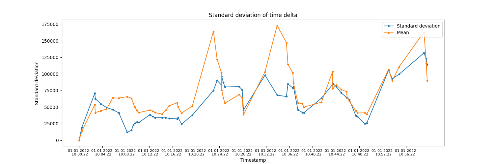

Note
Go to the end to download the full example code.
Rolling standard deviation of data points time delta
Example of visualizing rolling standard deviation of time delta of time series data to identify dispersion in the ingestion of data.
from datetime import datetime, timedelta
import matplotlib.pyplot as plt
import numpy as np
import pandas as pd
from indsl.data_quality.rolling_stddev import rolling_stddev_timedelta
from indsl.smooth import sma
data = pd.Series(1, index=pd.date_range(start="2022-01-01 10:00:00", end="2022-01-01 11:00:00", freq="1s")).sample(60)
data = data.sort_index()
time_window = pd.Timedelta(minutes=5)
# Calculate rolling standard deviation of time delta
stddev = rolling_stddev_timedelta(data, time_window=time_window).values
# Calculate rolling mean of time delta
mean = sma(
data.index.to_series().diff().astype("timedelta64[ms]").dt.total_seconds().fillna(0) * 1000,
time_window=time_window,
min_periods=1,
)
# Plot standard deviation and mean
fig, ax = plt.subplots(figsize=(15, 5))
ax.title.set_text("Standard deviation of time delta")
ax.plot(data.index, stddev, label="Standard deviation", marker=".")
ax.plot(data.index, mean, label="Mean", marker=".")
values = np.arange(data.index[0], data.index[-1], timedelta(minutes=4)).astype(datetime)
ax.set_xticks(values)
ax.set_xticklabels([ts.strftime("%d-%m-%Y \n %H:%M:%S") for ts in values], fontsize=8)
legend = ax.legend(loc="upper right")
plt.xlabel("Timestamp")
plt.ylabel("Standard deviation")
plt.show()
Total running time of the script: (0 minutes 0.166 seconds)